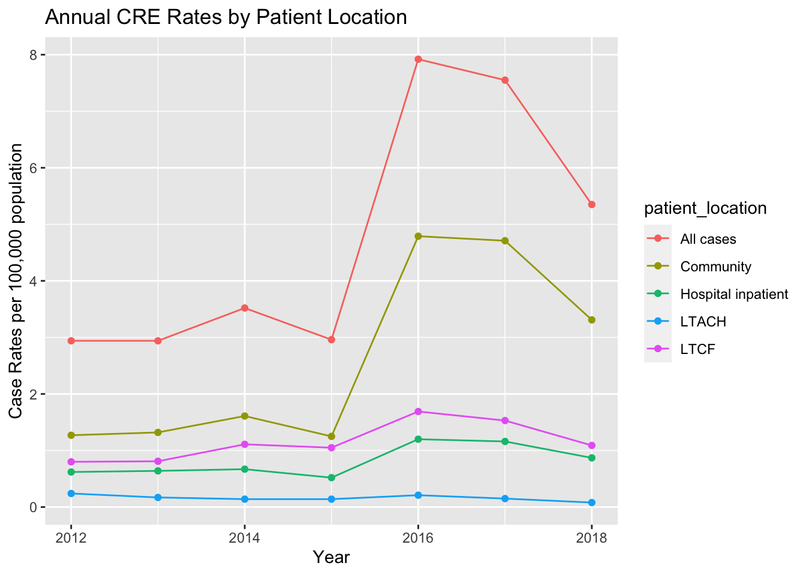
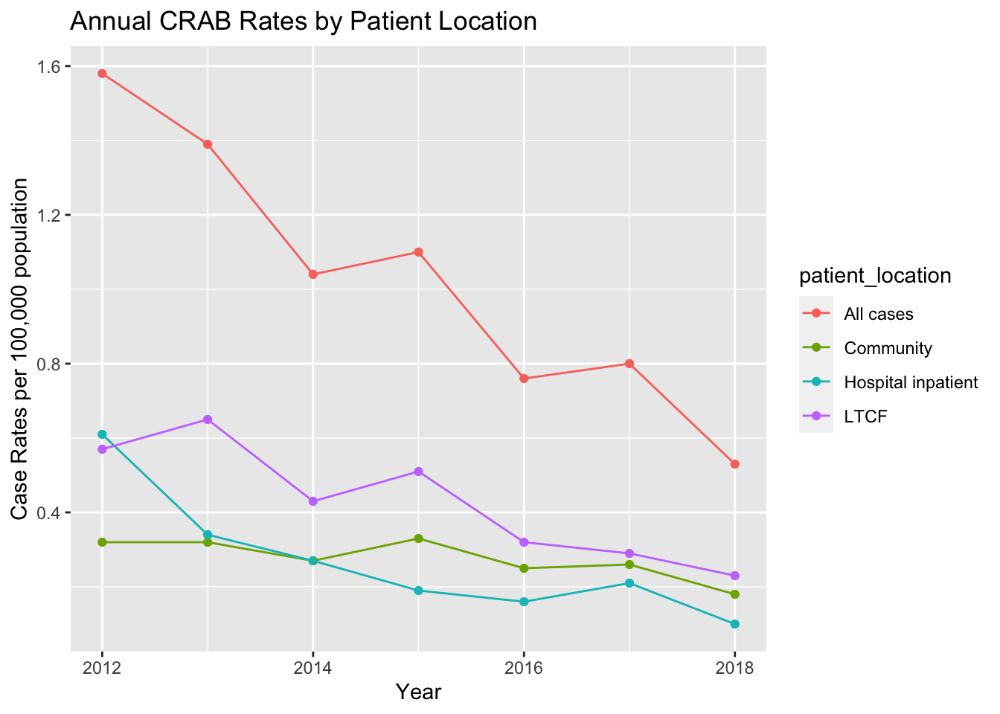

The healthcare-associated infection component of CDC’s Emerging Infections Program engages a network of state health departments and their academic medical center partners to help answer critical questions about emerging threats, advanced infection tracking methods, and antibiotic resistance in the United States. Information gathered through this activity will play a key role in shaping future policies and recommendations targeting HAI prevention.
Selected gram-negative bacteria are under surveillance, as they are becoming resistant to all or nearly all antibiotics, meaning that patients with infections from these bacteria might have few or no treatment options. Infections due to highly resistant bacteria, such as carbapenem-resistant Enterobacterales (CRE), carbapenem-resistant Acinetobacter baumannii (CRAB)are mainly associated with healthcare settings and have high death rates.
We will explore longitudinal data from these pathogens on CDC’s website.
Rows: 328 Columns: 6
── Column specification ────────────────────────────────────────────────────────
Delimiter: ","
chr (4): Organism, Topic, Viewby, Series
dbl (2): YearName, Value
ℹ Use `spec()` to retrieve the full column specification for this data.
ℹ Specify the column types or set `show_col_types = FALSE` to quiet this message.
#view some dataprint(mugsi)
# A tibble: 328 × 6
YearName Organism Topic Viewby Series Value
<dbl> <chr> <chr> <chr> <chr> <dbl>
1 2012 CRAB Case Rates Age 19-49 years 1.06
2 2013 CRAB Case Rates Age 19-49 years 0.89
3 2014 CRAB Case Rates Age 19-49 years 0.53
4 2015 CRAB Case Rates Age 19-49 years 0.9
5 2016 CRAB Case Rates Age 19-49 years 0.59
6 2017 CRAB Case Rates Age 19-49 years 0.38
7 2018 CRAB Case Rates Age 19-49 years 0.28
8 2012 CRAB Case Rates Age 50-64 years 1.87
9 2013 CRAB Case Rates Age 50-64 years 2.42
10 2014 CRAB Case Rates Age 50-64 years 2.13
# … with 318 more rows
YearName Organism Topic Viewby
Min. :2012 Length:328 Length:328 Length:328
1st Qu.:2013 Class :character Class :character Class :character
Median :2015 Mode :character Mode :character Mode :character
Mean :2015
3rd Qu.:2017
Max. :2018
Series Value
Length:328 Min. : 0.0000
Class :character 1st Qu.: 0.3675
Mode :character Median : 1.0950
Mean : 2.9935
3rd Qu.: 2.9600
Max. :65.2200
#look at values for organism, topic, viewby, and series and table(mugsi$Organism)
CRAB CRE
133 195
table(mugsi$Topic)
Case Rates Death Rates
314 14
Analytic Goals
The objective of this analysis will be to view the number of CRE cases by year and patient location. We will first subset the data to only include that information.
However, the data are laid out in a funny shape for analysis. For this project we will subset the data to be laid out in a more Tidy manner.
We will make columns year, organism, case rates, and death rates. There will be a row for each year, organism, and location combination.
# A tibble: 63 × 5
YearName Organism patient_location case_rates death_rates
<dbl> <chr> <chr> <dbl> <dbl>
1 2012 CRAB All cases 1.58 0.32
2 2013 CRAB All cases 1.39 0.22
3 2014 CRAB All cases 1.04 0.2
4 2015 CRAB All cases 1.1 0.16
5 2016 CRAB All cases 0.76 0.07
6 2017 CRAB All cases 0.8 0.18
7 2018 CRAB All cases 0.53 0.08
8 2012 CRAB Community 0.32 NA
9 2013 CRAB Community 0.32 NA
10 2014 CRAB Community 0.27 NA
# … with 53 more rows
view(mugsi_tidy)
Analysis Next Steps
In order to plot the number of CRE cases by patient location over time you will need the following variables:
YearName : Numeric variable for year Organism: Indicates if CRE or CRAB data case_rates: Numeric variable describing organism rates per 100,000 population patient_location: categorical variable describing patient location (LTAC= long term acute care hospital, and LTCF= long term care facility, All Cases = Sum of all locations
Analysis notes:
You should look at either “All cases” or the four location groupings (hospital inpatient, community, LTCF, and LTAC). “All cases” represents the sum of the four subset locations.
Death rates are only available for “All cases” (not stratified by patient location).
Kelly’s Analysis
I am going to graph CRE rates over time by location.
mugsi_plot1 <-subset(mugsi_tidy, Organism=="CRE")ggplot(mugsi_plot1, aes(x=YearName, y=case_rates, color=patient_location, group=patient_location)) +geom_point() +geom_line() +labs(y="Case Rates per 100,000 population", x="Year", title ="Annual CRE Rates by Patient Location")

Now I will save this into a R dataset for you to analyze!
#Exportsave(mugsi_tidy, file ="Data_Exercise/Data/MUGSI_tidy.RData") #raw and clean data if needed
You are up!
Some potential analytic ideas:
Look at trends in case rates and death rates for each year for each pathogen group.
Look to see if CRAB trends are similar to CRE trends in specific settings.
This section is added by Christian Okitondo
Loading the RData file of the cleaned data
#Path to data. Note the use of the here() package and not absolute pathsload(here::here("Data_Exercise","Data","MUGSI_tidy.RData"))
Checking to see if data frames show up as in the workspace
Trends of CRAB rates over time by patient location
mugsi_crab <-subset(mugsi_tidy, Organism=="CRAB")ggplot(mugsi_crab, aes(x=YearName, y=case_rates, color=patient_location, group=patient_location)) +geom_point() +geom_line() +labs(y="Case Rates per 100,000 population", x="Year", title ="Annual CRAB Rates by Patient Location")

Trends of the CRE and CRAB rates by all cases (sum of the four subset patient locations)
# Creating a subset of the data indicating patient location is all cases.mugsi_location <-subset(mugsi_tidy, patient_location =="All cases")ggplot(mugsi_location, aes(x=YearName, y=case_rates, color=Organism, group=Organism)) +geom_point() +geom_line() +labs(y="Case Rates per 100,000 population", x="Year", title ="Annual CRAB Rates by Patient Location")